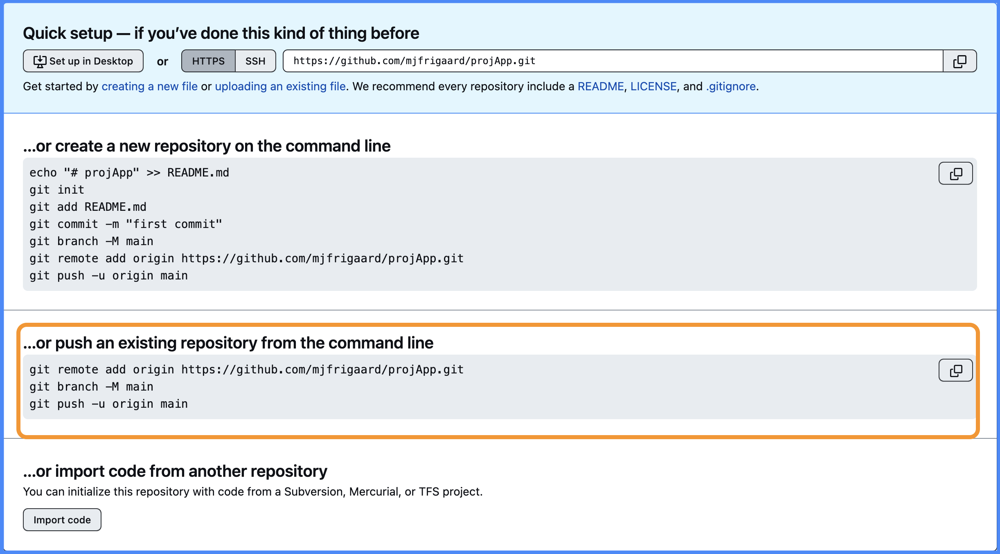
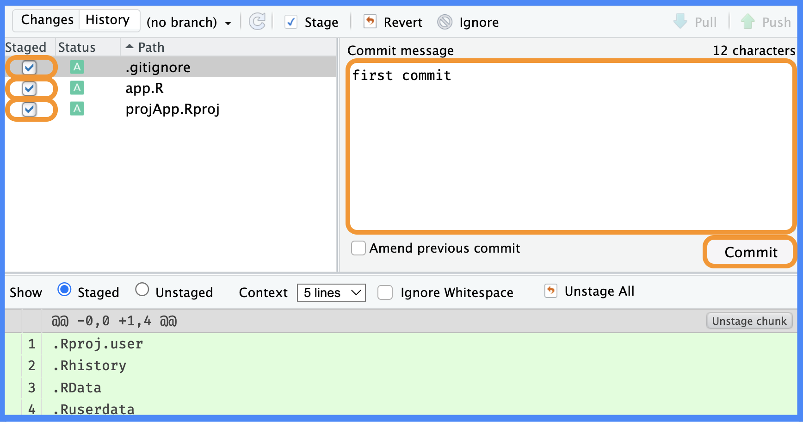
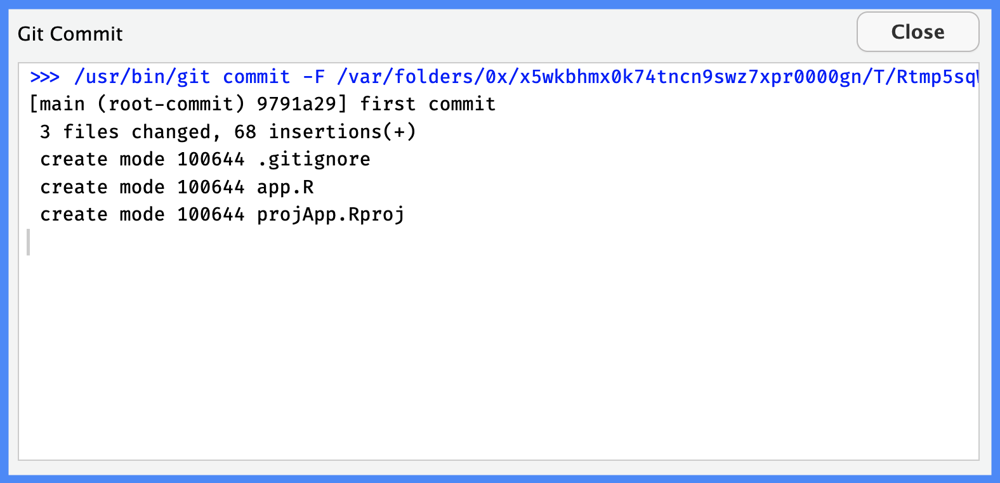
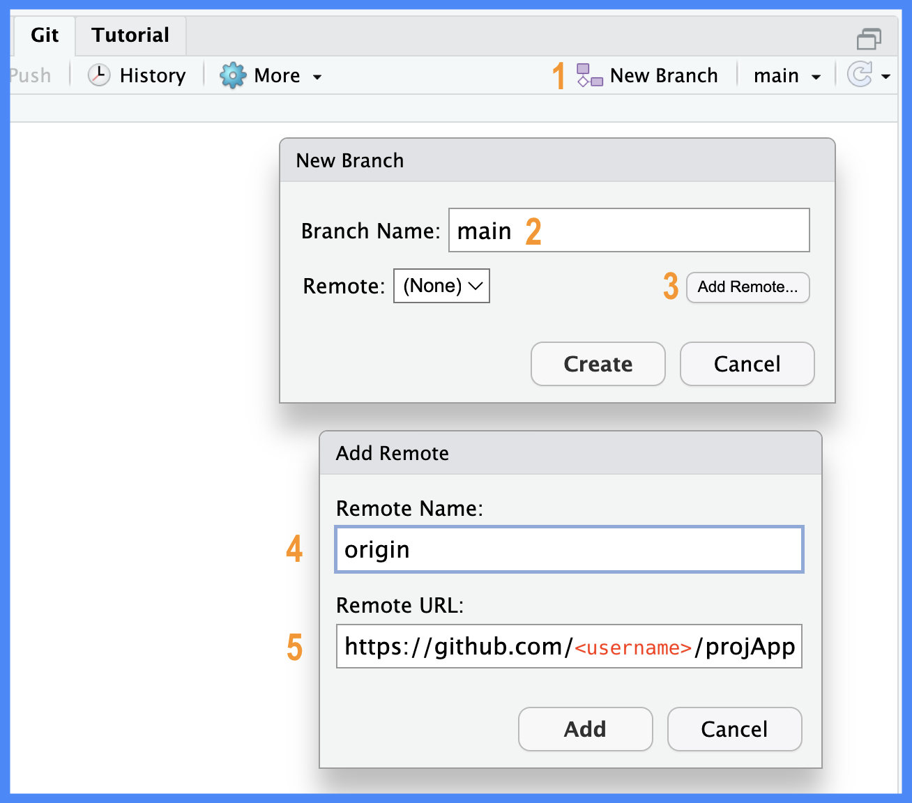
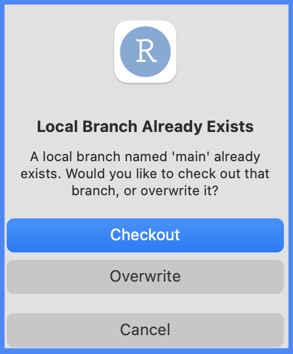
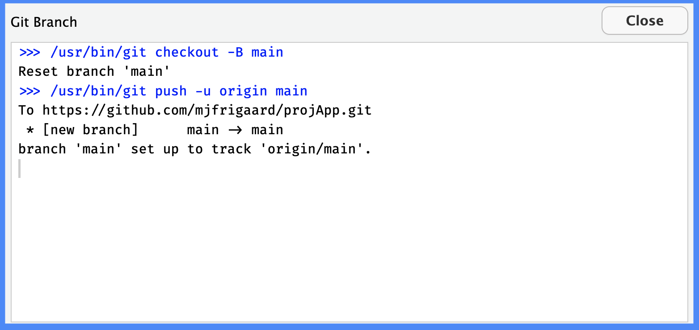

The shinyAppProj repo is a shiny application built outside of a package structure. It was initially created using the New Project Wizard (with a Git repo initialized).
If you’re new to GitHub, the steps below will walk you through setting up Git and GitHub from RStudio using the Git pane. The initial files in the project are below:
After creating the project, head over to GitHub and create am empty repo. You’ll see the following options:

(a) New repository on GitHub
Figure B.1: Empty GitHub repository options
We’re interested in the second option, “…push an existing repository from the command line”, but we’re going to use Posit Workbench’s Git pane.
Commit
Commit these initial changes to the repo using the Commit icon in the Git pane
(a) Commit changes

(b) First commit
Figure B.2: Click on Commit to open the Git window. Stage all the files, add a commit message, and click Commit
Add a commit message and click Commit. This is the equivalent of entering the following commands in the Terminal:
git commit -m 'first commit'
Commit changes in your repository with a specific message
git commit -m 'first commit'
git commit: This command captures a snapshot of the changes in your project’s tracked files and directories. By committing, you’re saving the current state of those files in the Git repository.
-m: This flag indicates that a commit message will be provided directly from the command line.
'first commit': This is the commit message associated with this commit. Commit messages are useful for documenting the changes you’ve made, making it easier for others (and your future self) to understand the evolution and purpose of changes in the project.
When you run git commit -m 'first commit', you are committing your staged changes (i.e., changes you’ve previously added to the staging area using git add) with the message ‘first commit’.
This message is then stored in the Git history, allowing anyone who looks at the commit logs to see a brief description of what was done in that particular commit.
Review the output from the commit.

(a) First commit output
Figure B.3: The .gitignore, app.R, and shinyAppProj.Rproj files have been committed to main
This shows the contents of shinyAppProj are part of the main branch. Now we need to make sure the local branch has a remote (on GitHub at https://github.com/<username>/shinyAppProj.git).
Rename the currently checked-out branch to main
The command git branch -M main is used to rename the currently checked-out branch to main.
Here’s a breakdown of the command:
git branch: This command without any arguments would list all the local branches in the current repository. But, with certain options (like -M), you can perform other branch-related operations.
-M: This option stands for ‘move/rename’ and forcibly renames the branch. If a branch named main already exists, it will be overwritten because of the forceful nature of the -M option. If you want to avoid accidentally overwriting an existing branch, you could use -m (lowercase) instead. The lowercase -m will rename only if the target name doesn’t already exist.
main: This is the new name for the currently checked-out branch.
The command became more common after the industry started transitioning from using master to main as the default branch name for new repositories. Running git branch -M main is a way to rename the master branch to main in existing repositories.
Adding remotes
Click the New Branch icon in the Git pane and create a new main branch. Then click on Add Remote… and name the remote origin.

(a) Add branch and remote name
(b) Add remote URL
Figure B.4: Create new main branch to track origin
The Remote URL is the link from the Quick Setup above. After clicking Add and Create, you’ll be asked to checkout or overwrite the existing main branch. In this case, we can select Overwrite (because we’re already on the main branch).
git remote: used to manage and set remotes (‘remote repositories’) for your project
add: specifies that you want to add a new remote.
origin: a convention widely used in the Git community is to name the primary remote repository origin.
https://github.com/<username>/<repo>.git: This is the URL to the Git repository (hosted on GitHub). Replace <username> with the GitHub username of the repository owner and <repo> with the name of the repository.
So, when you run this command, you’re telling Git: ‘I want to add a new remote called origin, and the URL for this remote is https://github.com/<username>/<repo>.git'.’
After executing this command, you can then push to and pull from the repository using this remote by referring to its name (origin). For instance, git push origin master would push your local master branch to the master branch on the origin remote.

(a) Overwrite main

(b) branch main set up to track origin/main
Figure B.5: main will now track the remote (origin)
Push a local branch (main) to a remote (origin), and set local branch to track remote branch
git push -u origin main
git push: used to push commits from your local repository to a remote repository.
origin: name of the remote repository you want to push to. When you clone a repo or add a remote using git remote add, it’s common to name the main remote origin (though it could technically be any name).
main: name of the branch you’re pushing to the remote repository.
-u or --set-upstream: When this option is used, it sets a tracking relationship between the local and upstream remote branches. This means that in the future, using git pull or git push doesn’t require specifying the remote or branch (Git will know you’re referring to the origin/main branch).
In essence, git push -u origin main is saying: ‘Push my ’main’ branch to the ‘origin’ remote, and also set my local ‘main’ branch to track the ‘main’ branch on ‘origin’.
The common workflow for setting up Git from the command line is below:
# make changes
git add .
git commit 'first commit'
# set remote on GitHub
git remote add origin https://github.com/<username>/<repo>.git
# rename the current branch to main
git branch -M main
# push and set upstream to origin (remote)
git push -u origin main